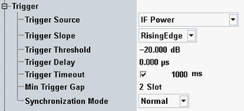

The trigger parameters configure the trigger system for the measurement.

Selects the source of the trigger event. Some of the trigger sources require additional options.
"Free Run (Fast Sync)" | The measurement starts immediately after it is initiated. The R&S CMW decodes the signal to derive its slot and frame timing. This procedure is repeated after each measurement cycle. If you want to measure a MIMO signal, ensure that the measured antenna transmits the synchronization signals PSS and SSS. Otherwise, this trigger method fails. |
"Free Run (No Sync)" | The measurement starts immediately after it is initiated, without any synchronization. This trigger mode can only be used for ACLR and emission mask measurements. |
"IF Power" | The measurement is triggered by the power of the received signal, converted into an IF signal. The trigger event coincides with the rising or falling edge of the detected LTE burst. |
"…External…" | External trigger signal fed in via the rear panel of the instrument. The availability of a trigger input connector depends on the instrument model. |
Qualifies whether the trigger event is generated at the rising or at the falling edge of the trigger pulse. This setting has no influence on "Free Run" measurements and for evaluation of trigger pulses provided by other firmware applications.
Defines the input signal power where the trigger condition is satisfied and a trigger event is generated. The trigger threshold is valid for power trigger sources. It is a dB value, relative to the reference level minus the external attenuation ("<Ref. Level> – <External Attenuation (Input)> – <Frequency Dependent External Attenuation>"). If the reference level equals the maximum output power of the DUT and the external attenuation settings are correct, the trigger threshold is relative to the maximum input power.
A low threshold can be required to ensure that the R&S CMW can always detect the input signal. A higher threshold can prevent unintended trigger events.
Defines a time delaying the start of the measurement relative to the trigger event. This setting has no influence on "Free Run" measurements.
Sets a time after which an initiated measurement must have received a trigger event. If no trigger event is received, a trigger timeout is indicated in manual operation mode. In remote control mode, the measurement is automatically stopped. The parameter can be disabled so that no timeout occurs.
This setting has no influence on "Free Run" measurements.
Defines a minimum duration of the power-down periods (gaps) between two triggered power pulses. This setting is valid for an "(IF) Power" trigger source.
- At the IF power-down ramp of each triggered or untriggered pulse, even if the previous counter has not yet elapsed. A power-down ramp is detected when the signal power falls below the trigger threshold.
- At the beginning of each measurement. The minimum gap defines the minimum time between the start of the measurement and the first trigger event.
The trigger system is rearmed when the timer has reached the specified minimum gap.

This parameter can be used to prevent unwanted trigger events due to fast power variations.
Remote command:Selects the size of the search window for synchronization - normal or enhanced.
If the trigger signal is timed accurately, the normal synchronization mode is sufficient and recommended for performance reasons. With increasing inaccuracy of the trigger signal timing, the search window in normal mode can be too small, resulting in a "Synchronization Problem". In that case, select the enhanced mode to increase the search window size.
For "Free Run (Fast Sync)", an enhanced search window is used irrespective of this parameter.
Remote command: